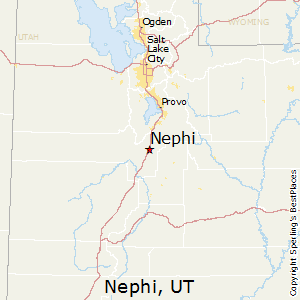
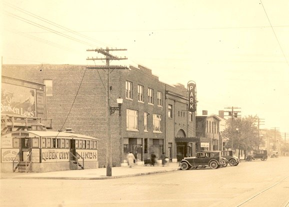

The story behind Ryan's Pizzeria starts in 1914 on July 11th, the same day Babe Ruth had his major league debut. A small town pizza shop in Nephi, Utah with humble beginnings bringing pizza to the community. Over the years as the surrounding towns began to build up and more infrastructure was built Ryan's pizzeria was able to expand and open and 2nd restaurant in 1925. During the times of the Great Depression the pizzeria stuggled and the 2nd location was forced to close. Nearing bankruptcy the pizzeria had to scrap by to survive but made a great revival in 1938 with some changes in service and pizza desgin they were able to comeback from the brink and expand more in the next few years opening 2 more restaurants, including the one that had to be closed before, and have great success. Continuing the success Ryan's Pizzeria was able to continue expanding to different locations with historical years including: 1950 the first location outside Utah, 1954 the 100th location opened, 1959 the first location outside the U.S. in Toronto, Canada. Nowadays you can find Ryan's Pizzeria in most major cities and taste the great pizza recipe that has lasted the last century and perserved to become a top restaurant chain in the world.
 